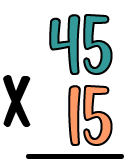

KREDDU


En esta lección aprenderás a realizar multiplicaciones
Las multiplicaciones tienen tres partes:
• Ponemos los factores ordenados uno debajo del otro, como se muestra a continuación.
• Multiplicar las unidades del multiplicador por el multiplicando y el resultado escribirlo
en la fila de abajo.
• Multiplicar las decenas del multiplicador por el multiplicando y el resultado escribirlo
en la fila de abajo pero desplazado una posición a la izquierda.
• Sumar los productos.